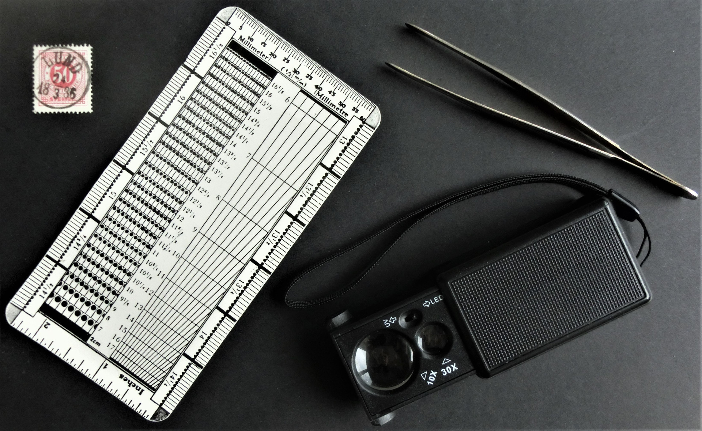

Alla, som är samlare av frimärken, posthistoria och vykort, är hjärtligt välkomna som medlemmar i Lunds Filatelistförening.
Medlemskap i vår förening ger ökade filatelistiska kunskaper och möjlighet att förvärva intressanta objekt på våra auktioner.
Medlem i Lunds Filatelistförening kan man bli vid personligt besök på ett av våra möten. Den årliga medlemsavgiften är 100 kr., som kan betalas kontant till föreningens kassör eller sättas in på Lunds Filatelistförenings bankgirokonto 928-3599.
Den, som har frågor angående medlemskap, får gärna kontakta föreningens sekreterare: Valter 070 625 49 69.
För den, som vill få ut ännu mer av sitt samlande, kan ett dubbelt medlemskap, som inkluderar medlemskap i Sveriges Filatelistförbund, rekommenderas. Aktuell information om Sveriges Filatelistförbund finns på https://filatelisten.se.

Hjärtligt välkommen som medlem!
Copyright © Lunds Filatelistförening 2022